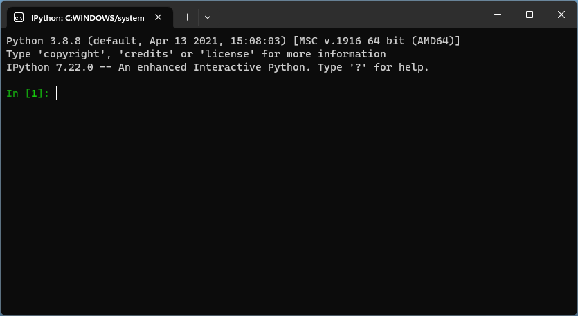

Введение
В этом разделе изложены вещи, которые нужно знать любому человеку, занимающемуся программированием.
В главе “Алгоритмы” рассказывается о самом важном понятии в программировании.
В главе “Как работают компьютеры” приведено до предела упрощённое описание внутреннего устройства компьютера и того, как выглядят программы “на самом деле”.
Из главы “Абстракции и виртуальные машины” читательница поймёт, что программисты — лентяи, и постоянно используют одни и те же приёмы, чтобы облегчать себе жизнь. Просто иногда называют их по-разному.
В главе “Языки программирования” рассказано о том, каким образом программы, написанные людьми по специальным правилам, превращаются в команды, которые компьютер может выполнить.
Алгоритмы
Алгоритм — чёткая инструкция для достижения какого-нибудь результата. Сложение и умножение чисел в столбик — алгоритм. Рецепт (если он хороший) — алгоритм приготовления блюда. А что такое хороший рецепт?
Хороший рецепт:
- Разогреть духовку до 210 градусов
- Выложить на решётку чевапчичи
- Поставить на полку противень (для сбора жира), а на него — решётку
- Запекать 25 минут
А плохой?
Жарить чевапчичи до готовности
Каждый шаг хорошего рецепта понятен и вполне однозначен, а единственный шаг плохого рецепта содержит лишь какие-то общие указания.
Кроме того, хороший рецепт подразумевает, что исполнитель однозначно понимает все шаги, из которых он состоит, и умеет их выполнять (так, как это представлял автор рецепта). Поэтому для человека, который умеет разогревать духовку, выкладывать продукты на решётку и засекать время, хороший рецепт вполне будет алгоритмом.
Обычно алгоритмы решают целое семейство сходных задач. Например, с помощью сложения в столбик можно сложить любые два числа, порядок действий от этого не изменится. Алгоритм “разложить в алфавитном порядке” одинаково пригоден и для сортировки специй, и для сортировки книг.
Часто бывает так, что какой-нибудь более сложный алгоритм включает в качестве шага какой-то более простой. На кухне такое, впрочем, встречается нечасто, а вот в математике — запросто. Например, чтобы перемножить два числа в столбик, в конце придётся сложить (обычно тоже в столбик) частичные произведения.
Бывает так, что некоторые шаги нужно повторять до достижения определённого результата. Например, как почистить мешок картошки:
- Если в мешке не осталось картошки, перейти к шагу 6
- Взять картошку из мешка
- Почистить её
- Положить её в миску-с-чищеной-картошкой
- Перейти к шагу 2
- Собрать очистки
Шаги 2-5 этого алгоритма будут повторяться до тех пор, пока вся картошка не будет почищена.
Такой алгоритм можно представить в виде блок-схемы (на ней хорошо видно это повторение):
flowchart TD
Bg((Начало)) --> A
A{Есть ли в мешке\n картошка?} -->|Да| B[Взять картошку из мешка]
B --> Cz[Почистить её]
Cz --> C[Положить в миску]
C --> A
A ----->|Нет| E[Собрать очистки]
E --> En((Конец))
Бывает даже так, что какой-то алгоритм включает в качестве шага самого себя — это называется рекурсией. Правда, с этим нужно быть аккуратным, потому что его исполнение может никогда не закончиться. Классический пример — вычисление N-ного числа Фибоначчи. Ряд Фибоначчи начинается с двух единиц, а далее каждое следующее число равно сумме двух предшествующих:
\[ 1, 1, 2, 3, 5, 8, 13, 21, 34, 56… \]
Как вычислить N-ное число Фибоначчи
- Если
N < 1— таких чисел нет. Ошибка.- Если
N = 1илиN = 2— ответ равен 1. Дальше делать ничего не надо- Вычислить N-1-ое число
- Далее вычислить N-2-ое число
- Сложить эти два числа, это и будет ответ
Во всех случаях алгоритмы подразумевают исполнителя, который должен понимать команды и уметь их правильно исполнять. При этом что по сути он собою представляет — не важно: рецепту может следовать и шеф, и поварёнок, и простая домохозяйка, а алгоритму вычисления чисел Фибоначчи может следовать и компьютер, и человек с калькулятором. Важно только, чтобы все одинаково понимали набор команд.
В следующем разделе рассмотрим, что же умеет типичный исполнитель-компьютер.
Как работает компьютер
Любая достаточно развитая технология неотличима от магии
(третий закон Артура Кларка)
Компьютеры умеют только одно: производить разные операции над нулями и единицами.
Но, во-первых, этих нулей и единиц много (порядка сотни миллиардов, если учитывать только оперативную память), а во-вторых, делают они это очень быстро (миллиарды операций в секунду). Поэтому нам кажется, что происходит какая-то магия. Эту магию мы можем увидеть, услышать или ощутить благодаря всяким дополнительным приспособлениям (устройствам ввода-вывода), с помощью которых вычислительная машина может взаимодействовать с внешним миром (и с нами).
Схематически компьютеры с момента самого их изобретения устроены следующим образом (эта схема называется архитектурой фон Неймана):
graph LR
subgraph C["Процессор"]
direction LR
M[Устройство\nуправления]
ALU[Арифметико-логическое устройство]
R[Регистры]:::alu
end
MEM
C <--> MEM[Оперативная память]
C <--> IO[Устройства\nввода-вывода]
classDef alu fill:#9ff;
Для чего нужны все эти части?
Процессор и его части
Арифметико-логическое устройство занимается арифметикой (складывает, вычитает, умножает, делит и т.п.) и логикой (сравнивает значения, выполняет дизъюнкцию, конъюнкцию и другие логические операции).
У процессора есть небольшое количество (порядка пары дюжин) регистров, в которых хранятся промежуточные результаты вычислений (и сравнений) и другие важные вещи, например, по какому адресу памяти нужно читать следующую команду.
Ключевая часть компьютера — устройство управления, которое командует почти всем остальным. Без него компьютер превратился бы в арифмометр, который работает только тогда, когда человек нажимает кнопки и крутит ручку. Устройство управления командует и само собой, читая из оперативной памяти команды и исполняя их.
Команды могут быть разными, например:
- Прочитать какое-нибудь значение из памяти и записать его в один из регистров
- Сложить числа из регистров
- Отправить какую-нибудь команду на одно из устройств вывода
- Перейти на какой-то другой адрес и начать читать команды оттуда
Собственно, последовательность таких команд и составляет программу. Сами команды, разумеется, тоже кодируются нулями и единицами.
Память
Оперативная память (часто просто “память”) состоит из множества ячеек, каждая из которых может хранить целое число от 0 до 255. У каждой ячейки есть свой номер — он называется адресом. В оперативной памяти хранится всё, что нужно для работы компьютера прямо сейчас.
Устройства ввода и вывода
Устройства ввода и вывода нужны для взаимодействия компьютера с внешним миром: без этого он не сможет делать ничего полезного. Устройства ввода, например, — это клавиатура и мышь, устройство вывода — монитор.
NB: жёсткий диск (SSD, флешка) — это не часть оперативной памяти, а одно из устройств ввода-вывода. Когда мы открываем какой-либо файл, то сначала процессор просит жёсткий диск скопировать данные с какого-то определённого места диска в память, а когда сохраняем — наоборот, записать данные обратно на диск.
Как выглядят программы
Программа может выглядеть, например, так:
- загрузи в регистр
Aчисло из памяти адресу 1 - загрузи в регистр
Bчисло из памяти по адресу 2 - сравни число из регистра
Aс числом из регистраB - если первое число меньше, перейди к шагу 7
- уменьши число в регистре
Ана число в регистреB(то есть вAбудетA - B) - перейди к шагу 3
- положи в память содержимое регистра
Aпо адресу 3
А вот как это выглядит в виде настоящей программы. Наверху есть кнопка Execute,
а внизу кода можно поменять начальные значения в ячейках num1 и num2.
Допустим, по адресу 1 расположено число 7, а по адресу 2 — число 3. Рассмотрим выполнение программы по шагам:
| Шаг | № ком. | Команда | № след. | A | B | Результат сравнения |
|---|---|---|---|---|---|---|
| 1 | 1 | Ячейка 1 → A | 2 | 7 | ||
| 2 | 2 | Ячейка 2 → B | 3 | 7 | 3 | |
| 3 | 3 | Сравнить A < B | 4 | 7 | 3 | |
| 4 | 4 | Если так, перейти к 7 | 5 | 7 | 3 | нет |
| 5 | 5 | A - B → A | 6 | 4 | 3 | нет |
| 6 | 6 | Перейти к 3 | 3 | 4 | 3 | нет |
| 7 | 3 | Сравнить A < B | 4 | 4 | 3 | нет |
| 8 | 4 | Если так, перейти к 7 | 5 | 4 | 3 | нет |
| 9 | 5 | A - B → A | 6 | 1 | 3 | нет |
| 10 | 6 | Перейти к 3 | 2 | 1 | 3 | нет |
| 11 | 3 | Сравнить A < B | 4 | 1 | 3 | да |
| 12 | 4 | Если так, перейти к 7 | 5 | 1 | 3 | да |
| 13 | 7 | A → Ячейка 3 | (конец) | 1 | 3 | да |
В этом случае программа вычислила остаток от деления числа 7 на число 3, вычитая из одного другое до тех пор, пока это возможно.
Контрольный вопрос
Что случится, если в ячейке
2будет записан ноль?
Абстракции и виртуальные машины
Писать программы в виде непосредственно команд для процессора весьма и весьма накладно, потому что кроме арифметики и логики нужно заниматься вводом и выводом, а как именно это делать — зависит буквально от всего, начиная от модели монитора и заканчивая тем, в какой именно порт воткнута клавиатура.
И здесь на помощь приходит идея абстрагирования. Поясним её на кулинарном примере. Когда в рецепте написано “вскипятить воду”, совершенно безразлично, каким именно способом это будет происходить. Один вскипятит воду в чайнике, другой в кастрюльке, третий в микроволновке, четвёртый на костре, пятый скомандует помощникам и т. п. Это некая абстракция, которая специфицирует результат, но не способ его достижения.
И именно такие абстракции очень нужны программистам. Например: “выведи строку” (неважно, на какой экран, может, вообще на принтере напечатать) или “прочитай файл по такому-то пути” (на диске, на флешке, по сети и т. п.), и нужен некий уровень абстракции (abstraction level), который возьмёт на себя все конкретные шаги по достижению какого-либо результата.
Для этого существует операционная система (ОС). Вместо того чтобы обращаться к видеокарте и монитору, программист просит ОС “напечатать на экране”, вместо обращения к жёсткому диску — “прочитай мне файл с таким-то именем”, и так далее. Такие обращения к ОС называются системными вызовами (system call). Кроме того, операционная система позволяет писать программу, не задумываясь о том, что вместе с ней одновременно могут работать какие-то другие программы, и множество всего прочего.
Но программисты редко работают напрямую с системными вызовами. Дело в том, что даже разные версии одной ОС могут иметь несколько различающиеся соглашения по этому поводу, а уж у разных ОС (например, Windows и Linux) системные вызовы совсем разные. Поэтому здесь нужен ещё один уровень абстракции, который обычно предоставляется средствами языка программирования, и он скрывает от программиста все тонкости взаимодействия с операционной системой.
Так, команда “напечатай строку на экране” в зависимости от ОС превращается в разные системные вызовы, а в зависимости от железа ОС делает разные вещи, но обо всём этом программисту обычно думать не нужно.
Но чтобы что-нибудь вычислить, операционная система не нужна, и в этом случае язык программирования помогает абстрагироваться от конкретных арифметических команд конкретного процессора.
Виртуальные машины
Идея абстрагирования имеет и другие интересные применения. Например, если очень хочется запустить какую-нибудь программу, написанную для отсутствующей аппаратной системы (например, Sega), то достаточно написать эмулятор, который будет исполнять команды точно так же, создав таким образом виртуальную машину (приставка — тоже машина).
Но кто сказал, что виртуальная машина должна обязательно соответствовать какой-то существующей системе? Можно ведь придумать свой удобный набор команд (“байт-код”), а затем реализовать его эмуляторы для всех нужных систем.
Именно так работает Java: программы на ней распространяются в виде кода для специальной виртуальной машины (Java Virtual Machine, JVM), а для каждой целевой системы существуют реализации JVM. Более того, есть несколько альтернативных реализаций JVM. А ещё на базе JVM можно писать программы не только на Java, но и на других языках.
Поскольку к этому моменту уже ничего не понятно, нарисуем древо абстракций:
flowchart TD
subgraph Lang[Языки программирования]
Java
Groovy
Kotlin
end
Lang <-->|Байт-код| JVM
subgraph JVM[Виртуальные машины Java]
Or[Oracle JVM]
OpenJDK
end
JVM <-->|Системные вызовы| OS
subgraph OS[Операционные системы]
Windows
Linux
macOS
end
OS <-->|Машинный код| Proc
JVM <-->|Машинный код| Proc
subgraph Proc[Процессоры]
Intel
AMD
ARM[Apple Silicon]
end
Как это понимать?
Программу, написанную на любом из этих языков, может выполнить любая виртуальная машина Java. Она, в свою очередь, может работать на разных операционных системах, которые могут работать на разном оборудовании. И благодаря тому, что на каждом уровне правила строго определены, большую часть времени программисту вообще не нужно думать, как это работает на самом деле.
Глубже и выше
Древо можно наращивать в обоих направлениях. Если речь идёт о программировании хоть сколько-нибудь сложной системы, то программисты сами наращивают абстракции. Например, брать деньги за какую-нибудь услугу можно разными способами, но с точки зрения процесса купли-продажи способ неважен, поэтому этот процесс прячется за абстракцией “платежа”.
Более изощрённый пример: существует, например, Jython — реализация языка Python, написанная на Java. А на Python написан эмулятор эзотерического языка программирования Befunge. Но это уже из области ненормального программирования.
С другой стороны, можно запускать программы не на реальной, а на виртуальной машине. Но всё обстоит даже интереснее: многие “реальные” современные процессоры содержат внутри специальную программу (микрокод), которая на самом деле исполняет “в железе” все команды.
Ну и в самом железе есть ещё пара уровней абстракции, которые скрывают от разработчиков логических схем процессора реальные физические явления. И всё это как-то работает!
Языки программирования
Сосредоточимся теперь на языках программирования. Они позволяют писать программы на более “человеческом” языке. Затем с помощью специальной программы то, что написано в “человечьем” виде превращается в команды для машины. Выглядит это так:
flowchart LR
s["Исходный код \n(на языке программирования)"]
t{Транслятор}
c["Команды для процессора \n(машинный код)"]
s --> t --> c
style t fill:#fe3
Исходный код — текст, написанный по специальным правилам языка программирования. Транслятор “переводит” его с языка программирования в последовательность команд для процессора (машинный код) или для виртуальной машины (байт-код).
Детали работы транслятора сейчас совершенно не важны. Важно, что делать это можно двумя разными способами: или один раз заранее, или каждый раз при запуске программы.
Виды трансляции
Компиляция
Компиляция — преобразование исходного кода в машинный заранее. Это происходит, как правило, на компьютере разработчика, и, таким образом, пользователь не имеет доступа к исходному коду программы (и без специальных навыков ему очень сложно что-то там подкрутить).
Интерпретация
Интерпретация — преобразование исходного кода в машинный прямо в процессе работы программы. Поэтому для работы программы каждый раз нужен интерпретатор. Из-за того, что трансляция происходит каждый раз во время работы программы, оно в целом работает медленнее, чем в случае компиляции. Зато программисту нужно гораздо меньше думать о том, на какой именно системе будет работать его программа.
Виртуальные машины размывают грань между интерпретацией и компиляций. Например, традиционно считается, что язык Java — компилируемый, а Python — интерпретируемый. На самом деле, оба они основаны на виртуальных машинах, вот только в случае Java виртуальная машина существует и распространяется отдельно от транслятора, а в случае Python они объединены.
Компилируемые языки обычно в целом более строгие и требовательные к программисту (потому что программу нужно скомпилировать “раз и навсегда”), а интерпретируемые отличаются большей гибкостью.
REPL
Интерпретируемые языки обычно содержат так называемый REPL — Read-Eval-Print Loop. Это специальная программа, которая читает (read) с клавиатуры какую-нибудь очередную команду языка программирования, сразу же исполняет (evaluate) её и выводит (print) результат. Потом процесс повторяется заново. Это очень удобно для того, чтобы разобраться в чём-нибудь, например, в процессе обучения.
В дистрибутиве Python есть специальный инструмент — IPython, который как раз реализует эту парадигму. Осталось его запустить и читать следующий раздел.
Давай сыграем в игру
Есть такая простая игра, которую можно сыграть с детьми (и с компьютерами). Она называется “Угадай число”. Правила игры такие:
- Один игрок загадывает число от 1 до 100.
- Второй игрок пытается угадать это число.
- После каждой попытки первый игрок говорит, больше или меньше загаданное число, чем предложенное.
- Второй игрок делает следующую попытку, и так до тех пор, пока число не будет угадано.
Можно сыграть в эту игру с компьютером, причём компьютер может быть как первым, так и вторым игроком. Давайте напишем программу, которая будет играть в эту игру с нами (компьютер будет первым игроком, а мы — вторым).
Что нужно делать компьютеру
- Загадать число от 1 до 100.
- Вывести “Угадай число от 1 до 100”.
- Спросить у пользователя число.
- Если число равно загаданному, то вывести “Ты угадал!” и закончить игру.
- Если число больше загаданного, то вывести “Загаданное число меньше”.
- Если число меньше загаданного, то вывести “Загаданное число больше”.
- Перейти к шагу 3.
Как это сделать
В этом алгоритме есть несколько разных типов действий:
- Вывести текст на экран.
- Спросить у пользователя число.
- Сравнить два числа.
- Сгенерировать случайное число.
- Повторять действия
На самом деле есть ещё несколько тонких моментов, которые в будущем нужно предусмотреть. Например, как быть, если пользователь — кот, у него лапки, и он вводит “неешь меня”?
Процесс изучения
Сначала попробуем освоить каджое действие в отдельности, и в этом нам поможет IPython. Потом соберём всё вместе и напишем программу.
Как выглядит IPython
IPython (Interactive Python) — отличный инструмент для обучения, быстрой проверки чего-нибудь и т. п. Он напоминает песочницу, в которой можно поиграть с языком Python, не боясь сломать что-нибудь важное. При запуске он выглядит как-то так:

и приветливо ожидает ввода команд (надпись In [1]: называется prompt — приглашением).
Сверху написана всякая служебная информация, из которых главное — версия Python (на скриншоте — 3.8.8).
Здесь же следует сделать лирическое отступление и рассказать немного о чёрном (или белом) окошке с буквами, которое именуется эмулятором терминала или же просто терминалом.
Исторически терминал — это клавиатура-с-монитором (а ещё раньше — клавиатура-с-принтером). К большой ЭВМ, которая могла занимать целый машинный зал, были присоединены одно или несколько таких устройств, и несколько пользователей могли работать одновременно, не мешая друг другу. С точки зрения ЭВМ это устройство ввода-вывода, которое умеет вводить и выводить текст. Изначально они были монохромные (точнее, чёрно-зелёные и чёрно-оранжевые), а уже много позже обрели целых 16 цветов.
Эта концепция оказалась настолько живучей, что в любом современном компьютере есть эмулятор терминала, который обеспечивает возможность взаимодействовать с компьютером с помощью текста.
IPython ждёт, что пользователь введёт строку кода на Python, тогда выполнит её, выведет результат исполнения и будет ждать следующую строку.
Нажимая кнопки ↑ и ↓ можно перемещаться по истории ввода, а кнопками ← и → — перемещаться по строке.
Вывод текста на экран
Поскольку вывод текста сначала происходил не на экран, а на бумагу, то для вывода текста исторически используется слово print (печать).
Воздадим должное программистским традициям, напечатав на экране "Hello, world!".
Открыв IPython, нужно в ответ на приглашение ввести print("Hello, world!") и нажать Enter.
Произошла какая-то магия и текст “Hello, world!” появился на экране. Вжух!
Можно попробовать сделать это ещё раз с другим текстом, например, print("Привет, мир!") или print("Я не хлеб а код, неешь подумой!").
Главное, чтобы внутри скобок был текст в кавычках, и в этом тексте не было внутренних кавычек.
Как это работает
Каждая строка в IPython — это команда, которую IPython выполняет. Команды могут быть разных типов. Конструкция print("Hello, world!") — это вызов подпрограммы. Сначала разберёмся, что такое подпрограмма, потом разберёмся, как её можно вызвать (то есть запустить).
Подпрограммы (функции)
Подпрограммы (они же часто называются функциями) — вещь удивительно полезная в хозяйстве. Один раз запрограммировал какое-то действие, возможно даже не ты, а кто-то другой, а потом можешь вызывать это действие в любой момент, когда понадобится. Мало того, у многих таких действий есть ещё и настраиваемые параметры (называемые аргументами), которые можно менять.
Вызов функции
Зачем нужны все эти скобочки, кавычки и прочая орфография? Давайте разберём пример print("Hello, world!") по частям.
print — это имя функции, которая встроена в Python, она есть везде и всегда.
Чтобы её вызвать, нужно поставить после её имени пару круглых скобок: print(). Эту нотацию программисты своровали у математиков: когда в математике пишут \( f(x) \), это означает, что нужно взять функцию \( f \) и применить её к аргументу \( x \). В нашем случае print — это функция, а "Hello, world!" — это аргумент.
Кстати, можно попробовать вызвать функцию print без аргумента, то есть просто написать print(). Что произойдёт? Попробуйте!
Аргументы функции print
Аргументы функции — это просто значения, которые передаются в функцию. В нашем случае единственный аргумент — строка "Hello, world!". Строка — это просто какой-то текст, заключённый в кавычки. В Python используются одинарные и двойные кавычки. Можно использовать любые, но важно, чтобы открывающая кавычка и закрывающая были одного типа.
Если аргументов несколько, то они отделяются запятой.
Что мы можем написать для нашей программы
Первой строкой нашей программы для игры будет вывод текста на экран. Выводить текст на экран мы будем с помощью функции print. В качестве аргумента мы будем передавать строку, которую нужно вывести на экран. Вот так:
print("Угадай число от 1 до 100")
Задания
- Вызвать функцию
printбез аргумента. Что произойдёт? Напечатано ли что-нибудь? - Вызвать функцию
printс одним аргументом-строкой, но забыть закрыть кавычки. Что произойдёт? - Вызвать функцию
printс двумя, тремя или большим количеством аргументов (аргументы отделяются друг от друга запятой). Что произойдёт?
IPython - калькулятор на стероидах
IPython умеет не только вызывать функцию print, но и вычислять арифметические выражения. Для этого нужно ввести выражение и нажать Enter.
NB: Когда мы развлекались с печатью текста, вывод IPython выглядел так:
In [1]: print("Hello, world!") Hello, world!Если же мы будем использовать IPython в качестве калькулятора, то вывод будет выглядеть так:
In [1]: 2 + 2 Out[1]: 4Обратите внимание на эту разницу. В первом случае мы вызвали функцию, которая что-то печатает на экране. Во втором случае мы просто ввели выражение, и IPython напечатал для нас его результат.
Выражения могут состоять из одного числа, например, 2 (в ответ будет выведено 2).
Можно посчитать что-нибудь посложнее, например, умножить пару больших чисел, например, ввести что-то в духе 1111 * 2222 и нажать Enter. Тут же появится ответ.
Кроме умножения, числа можно складывать (19 + 23), вычитать (15 - 167), делить (10 / 2) и возводить в степень (2 ** 16).
Python умеет обрабатывать очень большие целые числа (например, 2 ** 1000 или даже 2 ** 122910 — в нём 37 тыс. десятичных знаков).
Скобки и приоритет операций работают так, как мы привыкли. Можно попробовать вычислить 2 + 2 * 2.
Сравнение чисел
Нам ведь нужно сравнивать число, которое ввёл пользователь, с тем, которое загадал компьютер. Для этого есть специальные операторы сравнения. Всего их шесть:
<— меньше>— больше<=— меньше или равно>=— больше или равно==— равно!=— не равно
Первые два не вызывают никаких вопросов, вторые два выглядят несколько непривычно (вместо ≤ и ≥, которых нет на стандартной клавиатуре), но всё равно понятно, а вот последние два вызывают вопросы. Почему два знака равенства, а не один? Почему неравенство обозначается так странно?
Дело в том, что один знак равенства (=) служит практически во всех языках программирования не для того, чтобы сравнивать числа, а совсем для другого (об этом позже). Поэтому во избежание путаницы в Python, как и во многих других языках, для сравнения чисел используется два знака равенства.
Оператор != — это попытка изобразить знак неравенства, который в математике обозначается как ≠ (его тоже нет на стандартной клавиатуре). Некоторые другие языки изображают его иными способами, но в Python используется вариант !=, как и в подавляющем большинстве других языков.
Итак, попробуем что-нибудь сравнить:
In [1]: 2 < 3
Out[1]: True
In [2]: 2 * 2 == 5
Out[2]: False
Слова True и False обозначают, соответственно, Истину и Ложь (именно так, с больших букв).
Ошибки
Если написать выражение, не соответствующее правилам Python, например, 2 - или * 7, то интерпретатор будет
ругаться. Ошибка выглядит следующим образом:
File "<ipython-input-1-12edae092881>", line 1
2 -
^
SyntaxError: invalid syntax
Строку про файл мы можем игнорировать, потому что код исполняется в интерактивном окружении, а вот ниже информация полезная.
Сначала приведена строка кода, в которой содержится ошибка, на строку ниже стоит символ ^, который словно стрелка указывает на
место, где возникла ошибка, а ещё ниже указан тип ошибки (SyntaxError) и описание (неверный синтаксис).
Задания
- Посчитайте, сколько секунд в сутках.
- Напечатать числа с помощью функции
printи с помощью выражений. Почему вывод отличается? - Напечатать какие-нибудь числа и строки с помощью одного вызова функции
print. Какой вывод получается? - Напечатать текст вида “Количество секунд в году: ….”, где вместо многоточия будет правильное число с помощью одного вызова функции
print.
Типы данных
А теперь немного скучной (но важной) теории. Все значения, с которыми мы имеем дело в программировании, имеют определённый тип. Это необходимо для того, чтобы нули и единицы имели какое-то определённое значение.
Узнать, какого типа выражение можно с помощью функции type. Она принимает в качестве аргумента выражение и возвращает его тип. Например:
In [1]: type(5)
Out[1]: int
In [2]: type(3.1415926)
Out[2]: float
In [3]: type("Hello, world!"
Out[3]: str
In [4]: type(True)
Out[4]: bool
int — целочисленный тип, float — вещественное (не обязательно целое) число, str — строковый тип, bool — логический (булевый).
Существуют и другие встроенные типы данных, но для нашей маленькой игры нам понадобятся только эти четыре.
Типы данных ограничивают набор возможных действий, которые можно совершать с этими данными. Например, можно сложить два числа, а сложить число и строку нельзя.
In [4]: 5 + 7
Out[4]: 12
In [5]: 7 + 3.1415926
Out[5]: 10.1415926
In [6]: 5 + "мешок картошки"
---------------------------------------------------------------------------
TypeError Traceback (most recent call last)
<ipython-input-6-0b2b2b0b2b2b> in <module>()
----> 1 5 + "мешок картошки"
TypeError: unsupported operand type(s) for +: 'int' and 'str'
Уже знакомое нам сообщение об ошибке, которое говорит, что операция + не определена для типов int и str, то есть складывать 5 и “мешок картошки” нельзя.
Более того, если мы попробуем сложить число 5 и строку “7”, то ошибка будет та же.
При этом второе выражение вычисляется без ошибок, так как Python автоматически преобразует целое число в вещественное, чтобы совершить операцию сложения.
С другой стороны, можно попробовать сложить две строки:
In [6]: "5" + "7"
Out[6]: "57"
Явное преобразование типов
Часто бывает нужно превращать одни типы в другие. Для этого можно вызвать имя типа как функцию, передав в качестве аргумента то, что нужно преобразовать. Например, чтобы превратить что угодно в строку, нужно вызвать функцию str:
In [7]: str(5)
Out[7]: '5'
In [8]: str(True)
Out[8]: 'True'
Преобразование в целое число осуществляется функцией int:
In [9]: int(3.1415926)
Out[9]: 3
In [10]: int("5")
Out[10]: 5
При этом преобразование строки в число возможно только в том случае, если строка содержит только цифры. Если в строке есть что-то ещё, то произойдёт ошибка:
In [11]: int("мешок картошки")
---------------------------------------------------------------------------
ValueError Traceback (most recent call last)
<ipython-input-11-119192f62ea1> in <module>
----> 1 int("мешок картошки")
ValueError: invalid literal for int() with base 10: 'мешок картошки'
Задачи
- Какого типа результат вычисления выражения
2 * 5? - Какого типа результат вычисления выражения
2 / 5? - Какие значения при приведении к логическому типу
boolдаютTrue, а какие —False? Можно экспериментировать с разными числами и строками.
Переменные
Переменные — важнейшая концепция языков программирования. Понятие о переменных перешло в программирование из математики, но здесь имеет несколько иной смысл. Переменные позволяют хранить данные в памяти компьютера и обращаться к ним по имени. Переменную можно представить как коробку с подписью, в которую можно положить что-то и взять оттуда. Для нашей маленькой игры нам понадобятся переменные для хранения загаданного числа и предположения игрока.
В Python переменные создаются с помощью операцией, называемой по-русски присваивание (довольно странный перевод слова assignment). В этой операции есть две части: слева — имя переменной, а справа — значение, которое будет храниться в переменной. Между ними стоит знак =. Например, в следующем примере создаётся переменная answer и в неё записывается значение 42:
In [1]: answer = 42
Интерпретировать это можно следующим образом: “сделай коробку с надписью answer и положи в неё число 42”.
Как мы помним, если в IPython ввести выражение, то оно будет вычислено и результат будет выведен на экран. Попробуем ввести имя переменной:
In [2]: answer
Out[2]: 42
Если попробовать ввести имя переменной, которой ещё нет, то IPython выдаст ошибку:
In [3]: question
---------------------------------------------------------------------------
NameError Traceback (most recent call last)
<ipython-input-3-0b2b2b0b2b2b> in <module>()
----> 1 question
NameError: name 'question' is not defined
Переменные можно использовать почти во всех тех же местах, где и литералы (то есть числа, строки и др., записанные прямо в коде). Например:
In [4]: 42 ** 2 - 42 * 17
Out[4]: 1050
In [5]: answer ** 2 - answer * 17
Out[5]: 1050
Имя переменной должно начинаться с буквы (a-z, A-Z) или символа подчёркивания _. Остальные символы могут быть буквами, цифрами или символом подчёркивания. Имя переменной не должно быть в списке ключевых слов, которые имеют специальное значение.
Если присвоить переменной новое значение, то старое значение будет забыто:
In [6]: question = "Главный вселенной, жизни и всего такого: ..."
In [7]: question = "Сколько будет 6 х 9?"
In [8]: question
Out[8]: 'Сколько будет 6 х 9?'
Если справа от оператора присваивания (=) стоит выражение, то сначала оно вычисляется, а затем результат присваивается переменной.
Поэтому можно присваивать переменной результат вычисления выражения, содержащего её самою:
In [9]: x = 42
In [10]: x = x + 1
In [11]: x
Out[11]: 43
Типы переменных
Типы переменных могут меняться, если присвоить им значение другого типа. Например, в следующем примере переменная x сначала имеет тип int (целое число), а затем становится типа str (строка):
In [12]: x = 42
In [13]: type(x)
Out[13]: int
In [14]: x = str(x)
In [15]: type(x)
Out[15]: str
Для чего полезны переменные
Переменные полезны для того, чтобы отделять собственно вычисления от данных, с которыми они работают. Например, в следующем примере мы вычисляем площадь квадрата, используя переменную side для хранения длины стороны:
In [16]: side = 42
In [17]: print("Площадь квадрата со стороной", side, "равна", side ** 2)
Площадь квадрата со стороной 42 равна 1764
In [18]: side = 101
In [19]: print("Площадь квадрата со стороной", side, "равна", side ** 2)
Площадь квадрата со стороной 101 равна 10201
Обратите внимание, что вызов функции print выглядит так же, как и в первый раз.
Творческое задание
Ваш начальник хочет, чтобы программа для вывода “Hello, world!” была универсальна и расширяема. Для этого он предлагает хранить первую часть приветствия в одной переменной (как здороваться), вторую часть — в другой переменной (с кем здороваться), а затем выводить их на экран (вспомните о сложении строк). Напишите в IPython несколько команд, которые присвоят этим двум переменным правильные значения. Придумайте имена переменных, которые впечатлят вашего начальника. Попробуйте присвоить им другие значения (не Hello и не World). Придумайте весёлую кличку для начальника и поприветствуйте его.